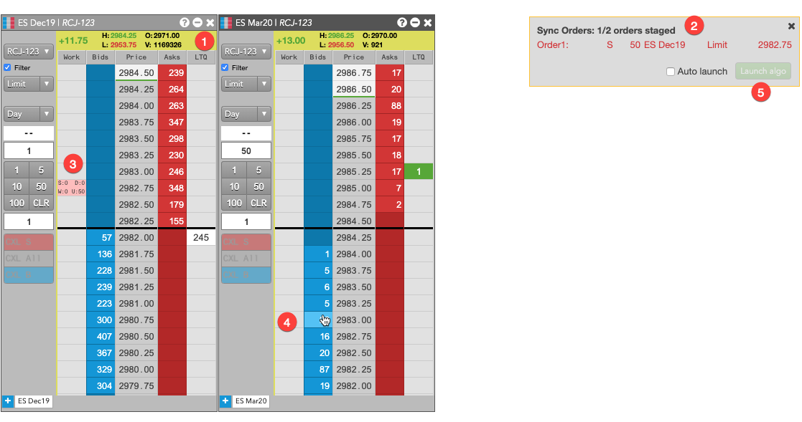
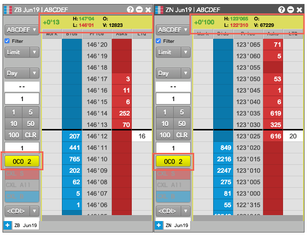

MD Trader order-building OMAs
TT also supports OMAs that run in an "order building" mode that lets you dynamically build an OMA order in MD Trader. Unlike Order Book OMAs, these OMAs also let you add both existing and new orders to the OMA order. From a single MD Trader widget, you can start the order-building OMA and then select working orders and submit new orders for the OMA to manage. You can also select or add orders across different instruments in different MD Trader instances.

When you select an OMA from the MD Trader Order Type dropdown, order-building mode is activated and:,
- All MD Trader header panels are shaded yellow to indicate that building mode is active.
- The order builder panel opens for the OMA that tracks the orders added to the OMA order. It also shows the current and maximum numbers of orders that the OMA can accept.
- If you select an existing order, it is added to the panel, as shown.
- If you place a new order while in order-builder mode, the new order will be added to the panel and submitted in a held state so it is not active in the market until the algo is launched.
- After you have specified the minimum number of orders required by the algo, the Launch algo button is enabled so you can launch the OMA.
After you launch the OMA, any new orders you added to the OMA order are put into working state and become active in the market.
The Conditional, OCO 2 and MinVol TT public OMAs are examples of MD Trader order-building OMAs.
{% comment %}
To simplify launching the Conditional, OCO 2 and MinVol OMAs from an MD Trader widget, you can add custom action buttons for the algos. The custom action button can also be associated with a specific template for an OMA.

Also, custom action buttons that support order building mode can be added to any visible MD Trader widget. You do not need to add one to other MD Trader widgets whose orders you want to use in the OMA.
{% endcomment %}